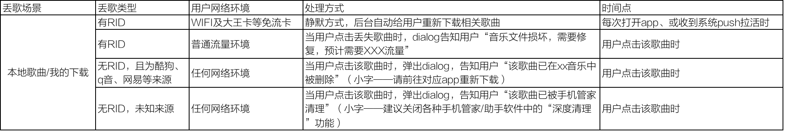
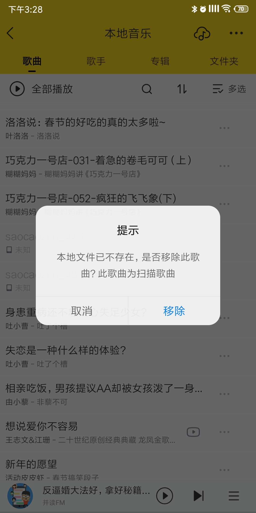

需求描述
• 丢失歌曲的情况拆解，及后续处理方式
情况1——有RID，且是wifi和免流环境（自动修复）
• 处理方式：静默方式，后台自动帮用户重新下载列表中歌曲文件丢失的数据
• 下载触发时间点：打开酷我/收到酷我push被拉活时
情况2——有RID，是普通流量环境（提示优化）
• 处理方式：用户点击歌曲→dialog告知用户“音乐文件损坏，需要修复，预计需要xxx流量”




取消
修复
文件损坏
音乐文件已损坏，自动修复，预计需要2.3MB流量。
情况3——无RID，且来源为酷狗、qq音乐等平台
• 处理方式：用户点击歌曲→dialog告知用户——该歌曲已在“酷狗音乐”中被删除，请前往xx重新下载
确定
提示
该歌曲在“qq音乐”中已删除。
（请前往qq音乐重新下载）
情况4——无RID，且来源未知
• 处理方式：用户点击歌曲→dialog告知用户——该歌曲已被“手机管家”清理，建议关闭手机管家等软件的“深度清理”功能，防止误删歌曲文件
确定
提示
该歌曲已被“手机管家”清理。
（建议关闭‘手机管家’等软件的‘深度清理’功能，防止误删歌曲）
本地歌曲/我的下载自动恢复机制及相关提示优化
优化——指纹识别+云盘提高自动恢复占比
• 前提条件：1、安卓解码器更换完成 2、测试指纹识别算法，准确率指标超过98%
• 自动替换机制：
1、在每次启动APP/push拉活时，对于检测到的未丢失文件、且rid=0的歌曲，进行一次指纹识别。
2、若识别到线上ID，则直接匹配线上ID。
3、若未识别到线上ID，则将该歌曲上传云盘，且记录sig。

整体流程图：
注：流程图中置灰部分为——指纹识别自动化、云盘自动保存两块逻辑
需要考虑本期工作量能否吃下